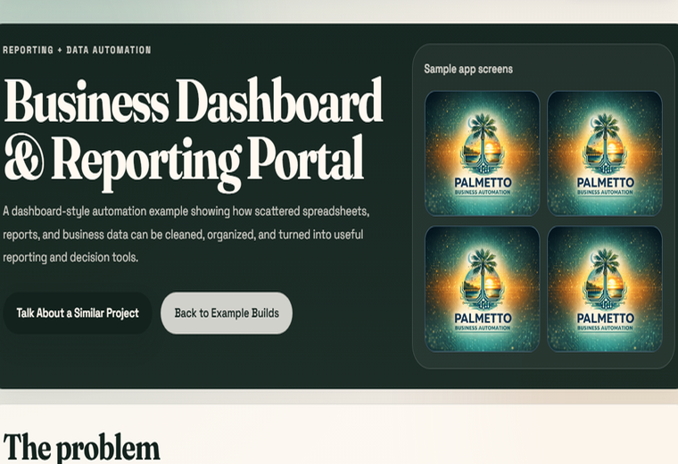
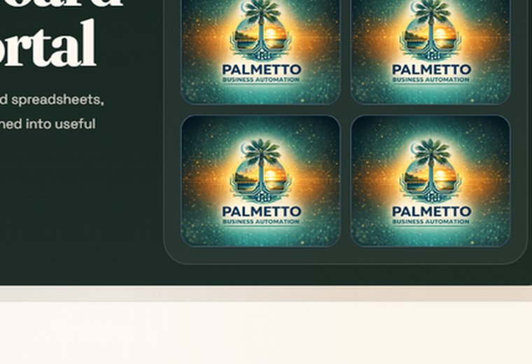
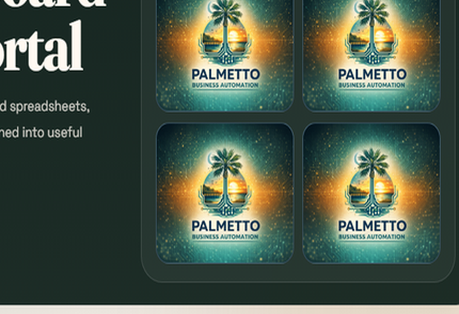
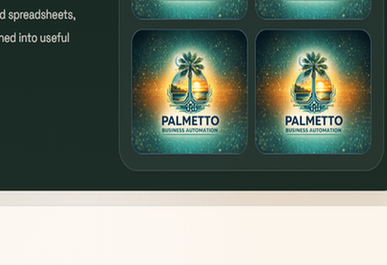

Reporting + Data Automation
Business Dashboard & Reporting Portal
A dashboard-style automation example showing how scattered spreadsheets, reports, and business data can be cleaned, organized, and turned into useful reporting and decision tools.
Sample app screens




The problem
Many businesses spend too much time pulling reports, copying spreadsheet data, cleaning numbers, and trying to understand performance across disconnected systems.
What was built
A dashboard and reporting portal that organizes data, tracks key metrics, and presents information in a clear, repeatable format.
Key features
How it works
Sample screens
KPI overview
Summary cards for revenue, counts, open items, and trends.
Filterable report
Searchable table with date, category, and owner filters.
Trend chart
Simple chart area for performance over time.
Exception list
Flags for missing data, outliers, or overdue items.
Export summary
A polished report handoff view for leadership.
Business value
This pattern can also be used for
Have a workflow like this?
If your business or organization is managing data, approvals, orders, requests, or reports through spreadsheets and email, Palmetto Business Automation can help turn that process into a custom web app.